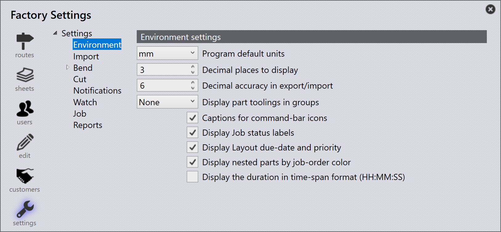

Environment

Omgivningsinställningar
Programmets standardenheter -Användaren kan välja om standardenheten är mm eller tum.
Visat antal decimaler - Detta värde används för att ställa in hur många decimaler som ska visas.
Decimalnoggrannhet vid export/import - Detta värde används för att ställa in hur många decimaler som ska vara exakta vid import eller export.
Visa detaljriggningar i grupper - Använd detta alternativ för att välja verktygsgrupp för att visa verktygsstatusen i delbiblioteket.
Bildtexter för kommandofältets symboler - Att aktivera detta alternativ ger en bildtext under varje ikon för att referera till vad sidan hänvisar till. När detta alternativ är inaktiverat tas alla bildtexter för växlarna bort och bara ikonen för varje sida visas.
Visa etiketter för jobbstatus - Att aktivera detta alternativ kommer att visa antalet delar som finns i ett jobb i slutet av Job-statusfältet. När detta alternativ är inaktiverat tas delräkningen bort och färgen för att visa processen kommer att finnas kvar.
Visa nestade detaljer med färg för jobbordningsföljd - Detta alternativ visar varje skild del inom ett jobb i en olika färg. Att inaktivera detta alternativ visar alla delar i samma grå färg.
Visa tiden i tidsintervallformat (HH:MM:SS) - Markera detta alternativ för att visa varaktighet i HH:MM:SS-format. När det är aktiverat visas varaktighet i layoutdetaljerna och jobb/layoutrapporterna i det valda formatet. På grund av utrymmeskrav visas varaktigheten i ett mer kompakt sekundformat på layoutpanelerna.